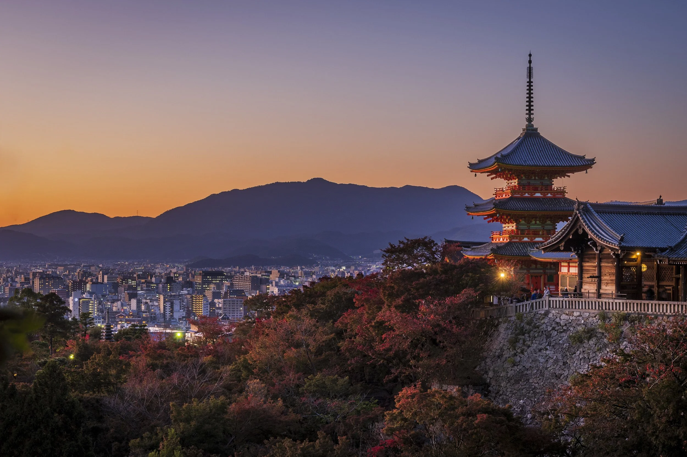

金閣寺 Kinkaku-ji
正式名稱為鹿苑寺，原是室町幕府第三代將軍足利義滿的別墅，他去世後改為禪寺。標誌性的舍利殿樓高三層，其中兩層貼滿金箔，倒映在鏡湖池上，是京都最著名的畫面之一。1950 年曾遭縱火燒毀，1955 年按原貌重建，1994 年列入世界文化遺產。

日本 JAPAN
京都（Kyoto）於公元 794 年由桓武天皇遷都至此，當時稱為「平安京」，此後作為日本首都長達一千餘年，直到 1868 年明治維新遷都東京為止。城市的街道參照中國唐代長安城的棋盤式格局規劃，以貫穿南北的朱雀大路為中軸。平安時代是日本貴族文化的黃金時期，其後歷經鎌倉、室町、戰國至江戶時代，京都始終是天皇所在與文化藝術的中心。
1467 年的應仁之亂曾令市街大部分焚毀，但憑著町眾與商人的力量迅速重建。第二次世界大戰期間，京都奇蹟地避過大規模空襲，大量寺院、神社與町家得以保存至今。1994 年，聯合國教科文組織把「古都京都的文化財」共十七處列入世界文化遺產。
京都的文化由宮廷的「雅」與禪宗的「靜」交織而成。這裡是茶道、花道、能劇與庭園藝術的重鎮，也是西陣織、京友禪、清水燒等傳統工藝的產地。市內保留大量木造的「町家」與石板小巷，祇園與先斗町一帶至今仍可見到藝妓與舞妓的身影。
京都人對季節極其敏感，年中行事一個接一個：五月的葵祭、七月的祇園祭、十月的時代祭，合稱京都三大祭。飲食方面，懷石料理、湯豆腐、抹茶與和菓子都源自這座城市。此外，京都也是日本著名的大學城，京都大學等學府為古都注入年輕氣息。
以下四個地方，是第一次去京都最值得優先安排的行程。點擊相片可以放大欣賞。
正式名稱為鹿苑寺，原是室町幕府第三代將軍足利義滿的別墅，他去世後改為禪寺。標誌性的舍利殿樓高三層，其中兩層貼滿金箔，倒映在鏡湖池上，是京都最著名的畫面之一。1950 年曾遭縱火燒毀，1955 年按原貌重建，1994 年列入世界文化遺產。
全日本約三萬座稻荷神社的總本社，供奉掌管五穀豐收與生意興隆的稻荷神。最著名的是沿著稻荷山山路排列的「千本鳥居」，數量超過一萬座，走完全程約需兩至三小時。神社境內二十四小時開放，清晨時分人最少，光線也最適合拍照。
創建於 778 年，本堂前方的「清水舞台」以不用一根釘的懸造工法建於斜坡之上，由一百三十九根巨大立柱支撐，離地約十三米。舞台下方是音羽瀑布，泉水一分為三，分別象徵長壽、健康與智慧。寺院也是賞櫻與賞楓的著名地點。
位於京都西郊的嵐山，一條約五百米的步道穿過高聳的孟宗竹林，風吹過時竹葉沙沙作響，被列入「日本音風景百選」。旁邊的天龍寺同為世界文化遺產，可以一併參觀；再往前走就是橫跨桂川的渡月橋。
出發前先看一次，對京都的景點分佈會更有概念。